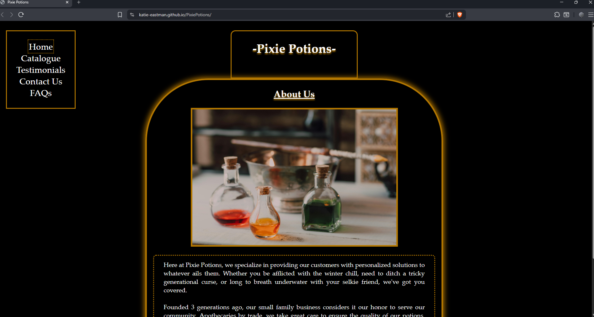
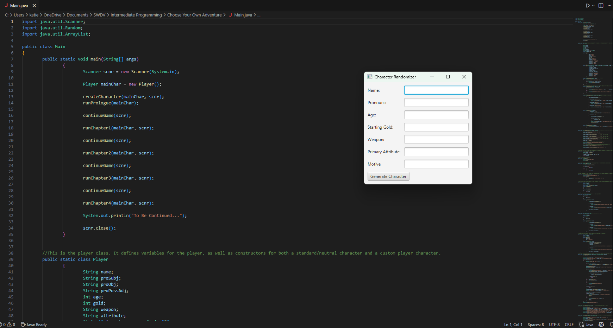
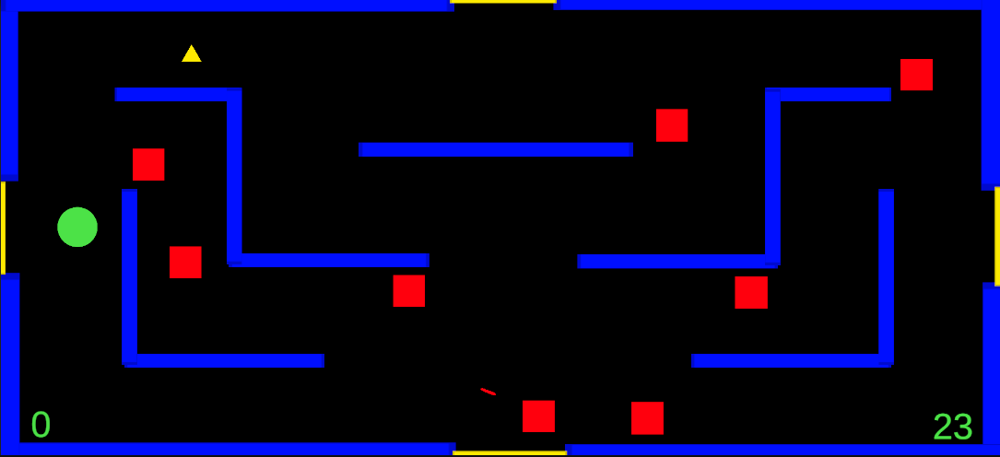

My Projects
Pixie Potions
This project is a simple website for a fake potion-selling business set in a hypothetical fantasy world of my own creation. This is also the first website I ever built.
Github Repo: Pixie Potions
Text Adventure
This is a simple, text-based fantasy adventure written in java and using javaFX GUI. It was my first programming project at CWI.
Github Repo: Text Adventure
Berzerk
'Berzerk' is a 2D game loosely based on the 80s arcade game by the same name. I coded this in Unity using c#, and it was one of my first projects after initially learning to code.
Github Repo: (Under construction!)